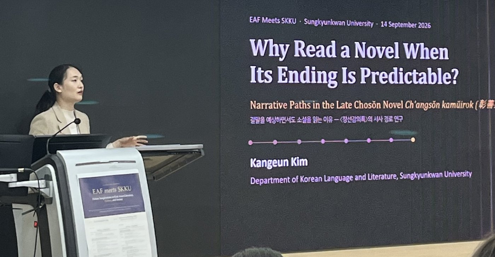

Kim Kang-eun(김강은, 金江恩)
BK Research Professor, Sungkyunkwan University
I am a research professor in the Education and Research Group of Korean Language and Literature for Innovation, Commons, and Justice at Sungkyunkwan University, beginning in September 2024. I received my Ph.D. from SKKU in the Department of Korean Language and Literature, under the supervision of Professor Jee-ha Lee.
My main area of research is Korean classical literature, with a particular interest in exploring its connection to digital methods such as gamified reading, interactive storytelling, and immersive reading. I am especially interested in:
- The interaction between Korean classical literature and digital media
- Projects that utilize Korean classical literature to generate social value
- Teaching Korean classical literature to students from non-Korean backgrounds
Education
- 2023. 2.Ph.D. Korean Classical Literature Thesis ↗Sungkyunkwan University
- 2017. 8.M.A. Korean Classical LiteratureSungkyunkwan University
- 2015. 2.B.A. Korean Language and LiteratureSungkyunkwan University
Employment
- 2024. 9.– nowBK Research Professor혁신·공유·정의 지향의 한국어문학 교육연구단Education and Research Group of Korean Language and Literature for Innovation, Commons, and Justice, Sungkyunkwan Univ.
- 2024. 3.– 8.Part-time LecturerUniversity College, Sungkyunkwan Univ.
- 2023. 3.– 2024. 2.Postdoctoral ResearcherDepartment of Korean Language and Literature, Sungkyunkwan Univ.
Award
- 2026. 4.Donam Academic Encouragement Award도남학술장려상Donam Scholarship Fund Committee (도남학술기금운영위원회), Department of Korean Language and Literature, Seoul National University